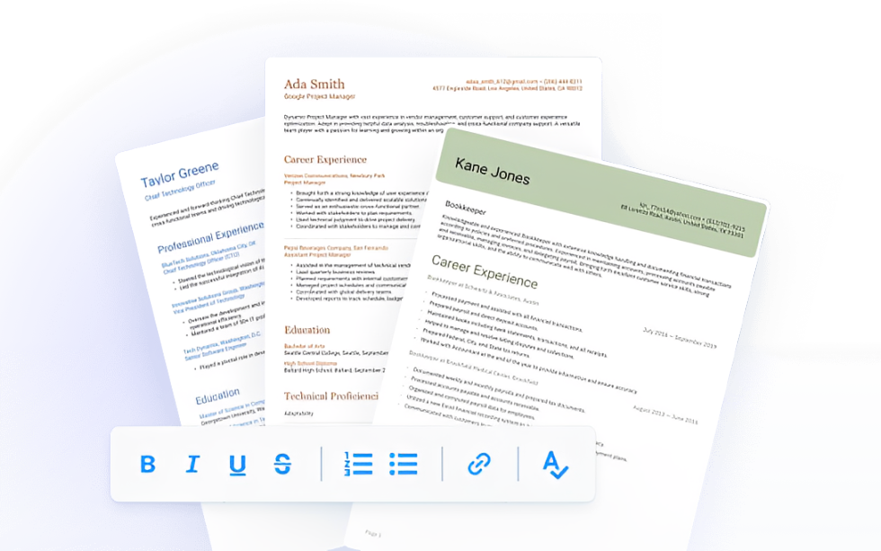
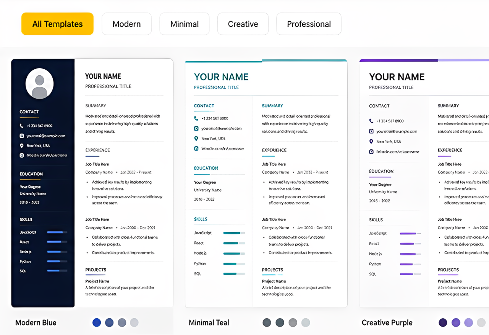

ATS Score Analysis
Instantly evaluate your resume's ATS compatibility. Receive a detailed ATS score based on formatting, keywords, readability, and structure, along with actionable suggestions to improve your chances of getting shortlisted.
Our Features

ATS Score Analysis
Instantly evaluate your resume's ATS compatibility. Receive a detailed ATS score based on formatting, keywords, readability, and structure, along with actionable suggestions to improve your chances of getting shortlisted.

Build Your Resume
Create a professional resume in minutes. Use our intuitive resume builder to design a well-structured, ATS-friendly resume. Simply fill in your details, and we'll generate a polished resume ready for job applications.

Professional Resume Templates
Choose from a variety of modern resume templates. Browse a collection of professionally designed, ATS-friendly templates suitable for freshers, experienced professionals, and different industries.
WHY SHOULD YOU
USE OUR ANALYZER ?
Transform your resume into an ATS-friendly, recruiter-ready document
with AI-powered insights, personalized recommendations, and
professional tools designed to maximize your interview opportunities.
Build smarter resumes, improve your ATS score, and increase your
chances of getting noticed by recruiters—all with one powerful
AI-powered platform.
Instant Al Scoring
Get a comprehensive resume score in under 30 seconds powered by advanced language models trained on millions of successful resumes.
ATS-Proof Optimization
Our Al checks compatibility with 50+ major Applicant Tracking Systems used by Fortune 500 companies like Google, Amazon, and Microsoft.
Data-Driven Insights
Every recommendation is backed by analysis of 10M+job placements. We know exactly what hiring managers are looking for.
Industry Specific
Tailored analysis for 200+ industries from tech to finance to healthcare, Our Al understands the language of your field.
Multiple Resume Versions
Create targeted versions of your resume for different roles. Our Al helps you customize it to each job description automatically.
Expert Career Coaching
Access Al-powered career coaching tips alongside automated analysis-like having a top recruiter review your resume 24/7.
YOUR DREAM JOB IS ONE
RESUME AWAY
Join 50,000+ professionals who've transformed their careers with us.
Analyzes your resume free - no credit card required.
© Copyright 2026 AI Resume Analyzer. All rights reserved.